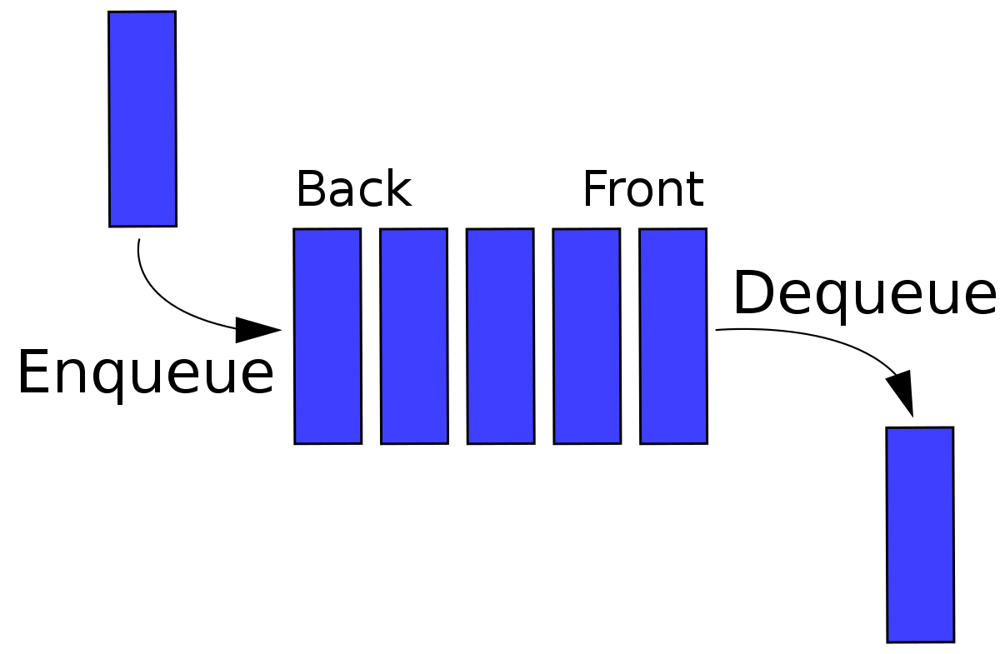

 Queue is an abstract data structure, somewhat similar to Stacks. Unlike stacks, a queue is open at both its ends. One end is always used to insert data (enqueue) and the other is used to remove data (dequeue). Queue follows First-In-First-Out methodology, i.e., the data item stored first will be accessed first.
The Double ended queue:
The operations containted in this
Enqueue front - Insertion at front
Enqueue Rear - Insertion at rear
Dequque Front - Deletion at front
Dequeue Rear - Deletion at rear
To see a simulation clickthis
The circular queue:
Operations on Circular Queue:
Front: Get the front item from the queue.
Rear: Get the last item from the queue.
enQueue(value) This function is used to insert an element into the circular queue. In a circular queue, the new element is always inserted at the rear position.
Check whether the queue is full – [i.e., the rear end is in just before the front end in a circular manner].
If it is full then display Queue is full.
If the queue is not full then, insert an element at the end of the queue.
deQueue() This function is used to delete an element from the circular queue. In a circular queue, the element is always deleted from the front position.
To see a simulation clickthis